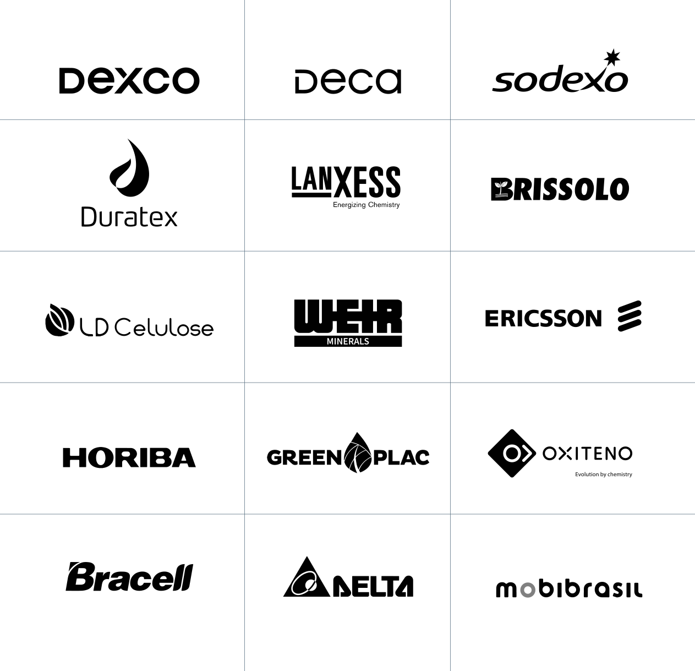

Fundada em agosto de 1998, a CQT Centomo Qualidade Total se consolidou como uma das principais empresas de consultoria e treinamentos em gestão da qualidade no Brasil — com foco no esclarecimento preciso dos mais diversos requisitos técnicos normativos e relacionamento sólido com os principais órgãos certificadores.
A partir de 2015, respondendo à necessidade das organizações de controlar a qualidade de remessas produzidas no exterior, desenvolvemos um módulo de serviços para inspeções, auditorias e desenvolvimento de fornecedores na Ásia, Europa e Oriente Médio, com bases operacionais em Istambul e Hong Kong.
Princípios de atuação
A CQT trabalha de maneira profissional, independente e imparcial. Realizamos serviços de inspeção e auditoria prezando pela honestidade; não toleramos desvios de métodos e procedimentos — ponto crítico quando se trata do mercado asiático, onde tolerâncias em ensaios podem ser abusadas para alterar conclusões de testes reais.
Reportamos dados, resultados e informações de forma legítima, e somente emitimos relatórios e certificados que representam corretamente as características encontradas, opiniões profissionais e resultados obtidos.
Nosso portfólio cobre o ciclo completo da conformidade — da implantação à manutenção dos sistemas de gestão, passando por padrões setoriais internacionais, inspeções de produto e apoio técnico regulatório.
Implantação de Sistemas de Gestão
Consultoria, auditorias internas e treinamentos para certificação em normas ISO de qualidade, ambiental, SST, segurança da informação e compliance.
Suporte ao Sistema de Gestão
Manutenção e evolução de sistemas já certificados — auditorias periódicas, atualização documental e preparação para recertificação.
SMETA / SEDEX, Ecovadis, BRCGS e outros
Preparação para padrões éticos e setoriais: SEDEX/SMETA, Ecovadis, IFC, FSC, IQG, Rainforest Alliance, ABNT PR 1004-1, ABIQUIM, BRCGS.
Pegada de Carbono e ESG
Elaboração do inventário GHG Protocol e registro na FGV; consultoria para incorporação de critérios ESG em estratégia e operação.
ISO 22000, FSSC 22000, HACCP
Implantação e treinamento em padrões de segurança de alimentos — PPR, APPCC, Food Defense, com foco em indústria e food service.
Atendimento a NRs e Riscos Legais
PGR NR-01, Apreciação de riscos NR-12, Análises ergonômicas NR-17, NR-37 offshore, auditoria e-Social e ISO 31022:2020.
Controle de Qualidade na Fonte
Inspeção de produtos, de fábricas e pré-embarque — Brasil, Ásia, Europa e Oriente Médio. Relatórios em português em até 2 dias úteis.
Capacitação de Equipes
Treinamentos in-company, formação de auditores internos e workshops práticos em todas as normas que atendemos.
Nossas inspeções cobrem desde artigos eletrônicos até produtos de vestuário, assegurando um rigoroso processo de análise e avaliação para garantir a conformidade e a qualidade de cada item.
Modalidades de inspeção
| Modalidade | Descrição | Momento |
|---|---|---|
| Inspeção de produtos | Verificação da conformidade do lote com especificações técnicas e requisitos da ordem de compra. | Durante ou pós-produção |
| Inspeção pré-embarque | Amostragem estatística do lote finalizado antes do carregamento, com plano MIL-STD-105E. | Antes do embarque |
| Supervisão de carregamento | Acompanhamento do processo de embarque — disposição no container, registro fotográfico e lacre. | No embarque |
| Inspeção / auditoria de fábrica | Verificação da capacidade produtiva, legalidade e estrutura do fornecedor para suportar decisões contratuais. | Antes da contratação |
| Inspeção de recebimento | Conferência do lote recebido no destino para validação da conformidade entregue. | Pós-desembarque |
Além dos requisitos específicos de cada ordem de compra, toda inspeção da CQT cobre um conjunto padrão de atributos de produto, apresentação e embarque.
Produto
Desempenho e conformidade
Embalagem e expedição
Cada inspeção parte de um plano e amostragem pré-aprovado com o cliente, é conduzida por um Inspetor da Qualidade designado in loco, e encerra em um relatório objetivo de conformidade.
Fluxo de inspeção
Solicitação
O cliente envia o pedido para info@cqt-br.com com especificações, ordem de compra e dados do fornecedor.
Inspeção in loco
Inspetor técnico designado executa o plano de amostragem, registra evidências fotográficas e testa atributos críticos.
Relatório
Relatório de conformidade emitido em português em até 2 dias úteis, permitindo decisão sobre o embarque.
Base estatística: MIL-STD-105E
Todas as inspeções são conduzidas com base no plano estatístico internacional de amostragem MIL-STD-105E (ISO 2859-1:1999), que define os tamanhos de amostra e os critérios de aceitação e rejeição de lotes por atributos. Pontos específicos de interesse do cliente são acrescentados ao plano-base.
Consultoria e implantação
Para os serviços de consultoria em sistemas de gestão, trabalhamos em cinco etapas encadeadas:
| # | Etapa | Entrega |
|---|---|---|
| 1 | Diagnóstico | Análise da situação atual e identificação de gaps em relação à norma alvo. |
| 2 | Planejamento | Cronograma, definição de responsabilidades e alocação de recursos. |
| 3 | Implantação | Implementação de processos, documentação e treinamento das equipes. |
| 4 | Auditoria interna | Verificação de conformidade e preparação para auditoria de certificação. |
| 5 | Certificação | Acompanhamento da auditoria externa e obtenção do certificado. |
Implantamos, auditamos e treinamos equipes em mais de 25 normas — das famílias ISO de gestão aos padrões setoriais e esquemas éticos internacionais.
| Família | Normas |
|---|---|
| Gestão e operação | ISO 9001:2015 · ISO 14001:2015 · ISO 45001:2018 · ISO 39001:2015 · ISO 41001:2020 · ISO 55001:2014 · ISO 50001:2018 |
| Compliance e governança | ISO 37001:2017 · ISO 37301:2021 · ISO 56002:2020 · ISO 27001:2023 · ISO 31022:2020 |
| Segurança de alimentos | ISO 22000:2019 · FSSC 22000 Ver. 6 · HACCP / APPCC · NBR 17183:2024 |
| Setorial & técnico | ISO 13485:2016 · IATF 16949:2016 · SA 8000:2014 · ISO 21001:2020 · ISO 17025:2019 |
| Padrões de mercado | SEDEX / SMETA 7.0 · Ecovadis · BRCGS · IFC · FSC · IQG · Rainforest Alliance · ABNT PR 1004-1:2020 · Atuação Responsável ABIQUIM · GHG Protocol (FGV) |
| Normas regulamentadoras | NR-01 (PGR) · NR-12 · NR-17 · NR-37 (offshore) · e-Social |
A diversificação entre variados setores demonstra nossa capacidade de atender necessidades específicas de cada organização.
Indústria
Manufatura, metalurgia, plásticos, automobilística.
Logística
Transporte, armazenagem e cadeia de suprimentos.
Alimentos
Processamento, distribuição e food service.
Saúde
Hospitais, laboratórios e dispositivos médicos.
Tecnologia
Software, TI e serviços digitais.
Energia
Petróleo, gás, renováveis e utilities.
Construção
Materiais, empreitadas e incorporação.
Offshore
NR-37, ISO 22000 para hotelaria em plataformas.
Mantemos bases operacionais em três pontos estratégicos para cobrir o ciclo global de produção e exportação dos nossos clientes.
São Paulo
Sede das operações de consultoria em sistemas de gestão, coordenação técnica e relacionamento com os órgãos certificadores nacionais.
Istambul
Inspeções e auditorias em fornecedores na Turquia, Europa e Oriente Médio, com profissionais locais para resposta rápida.
Hong Kong
Controle de qualidade na fonte de produção asiática, com foco em supervisão de carregamento e inspeção pré-embarque.
Emitimos todos os relatórios em Português, independentemente do país de inspeção — eliminando a necessidade de tradução interna pelo cliente.
Ao longo de mais de 25 anos de atuação, as centenas de clientes que conquistamos representam o compromisso e a dedicação com a excelência na entrega dos serviços de consultoria, auditoria, treinamentos e inspeções.

A diversificação entre variados setores demonstra nossa capacidade de atender as necessidades específicas de cada organização — de manufatura e alimentos a saúde, energia, logística e tecnologia.
Quatro atributos que resumem o valor percebido pelos nossos clientes ao longo dessas quase três décadas de atuação.
Diagnóstico personalizado
Análise de gaps sob medida, mapeamento de processos existentes e plano de ação customizado para cada realidade.
Capacitação de equipes
Treinamentos in-company, formação de auditores internos e workshops práticos para autonomia do cliente.
Abrangência nacional e global
Presença em todas as regiões do Brasil e bases em Istambul e Hong Kong — presencial e remoto.
Resultados mensuráveis
KPIs de conformidade, relatórios de progresso e 98% de aprovação dos clientes em 1ª auditoria de certificação.
Vamos conversar sobre o seu projeto?
Envie sua solicitação ou entre em contato direto — retornamos em até 1 dia útil.